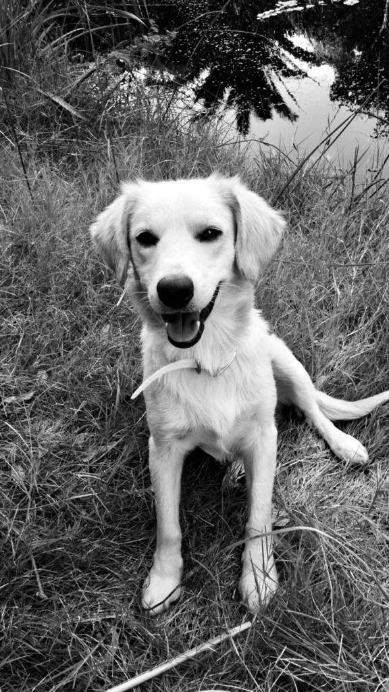

FAMOUS PHOTOGRAPHS IN HISTORY Nueva York - 1932 Audrey Hepburn - 1956 Nueva York - 1945 Normandía - 1944 Iwo Jima - 1945 Olaf - 2020 Evgeni Attsetski - 2015 Eugene Kukulka - 2010 Jamel Shebazz - 2008